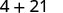
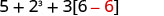

ماخذ: OpenStax Elementary Algebra 2e، باب Foundations، سبق «الجبرا دی زبان ورتو»۔ ایس قسط وچ حسابی عملاں دی ترتیب والا اک پورا سیکشن اے؛ پچھلا سیکشن وکھری قسط وچ اے تے اگلا سیکشن ہجے شامل نہیں۔ اصل انگریزی یادگاری فقرہ، فارمولا، جدول تے تصویراں قائم نیں۔
مترجم دی اپنی رہنمائی — ماخذ توں وکھری
ایہہ Use the Language of Algebra ماڈیول دا حسابی عملاں دی ترتیب والا پورا سیکشن اے۔ پچھلا سیکشن وکھرے پڑھت حصے وچ اے؛ اگلا سیکشن ہجے باقی اے۔ پنجابی نثر سجّے توں کھبے اے، پر سارے اصل فارمولا، جدول تے تصویراں دی سمت نہیں پلٹی گئی۔
ماخذ چیتے رکھن لئی انگریزی فقرہ Please Excuse My Dear Aunt Sally ورتدا اے۔ اوہ فقرہ، اوہدے موٹے پہلے اکھر تے تصویراں اندر انگریزی لکھت اصل ماخذ دے حصے نیں، پنجابی لفظاں دے پہلے اکھر نہیں۔ ساڈیاں اپنی وضاحتاں تے تصویری درُستیاں ہیٹھ وکھرے حصے وچ نیں۔ پنجابی بولن والے ماہر، ریاضی دے استاد تے مددگار پڑھت والے اوزاراں دی انسانی جانچ ہجے باقی اے۔
حسابی عملاں دی ترتیب نال جبری عبارتاں نوں سادہ کرو
کسی جبری عبارت نوں سادہ کرن دا مطلب اے کہ جِنّا حساب ہو سکدا اے، اوہ سارا کرو۔ مثلاً نوں سادہ کرن لئی اسیں پہلاں نوں ضرب کر کے 8 کڈھاں گے تے فیر 1 جوڑ کے 9 کڈھاں گے۔ اک چنگی عادت ایہہ اے کہ صفحے اُتے تھلے ول کم کردے جاؤ تے عمل دا ہر قدم پچھلے قدم دے تھلے لکھو۔ ہُنّے دَسّی مثال ایویں دِسّے گی:
جبری عبارت نوں سادہ کردے ویلے برابری دی نشانی نہ ورتو، تاں تسی جبری عبارتاں نوں مساواتاں نال رلاؤن توں بچ سکدے او۔
ایس ماخذی گل نال مترجم دی وکھری وضاحت وی پڑھو۔
جبری عبارت نوں سادہ کرو
جبری عبارت نوں سادہ کرن لئی، عبارت دے سارے عمل کرو۔
اسیں الجبرا وچ ورتیاں جان والیاں بہوتیاں علامتاں تے لکھتاں نال واقف کرا دِتا اے، پر ہُن سانوں حسابی عملاں دی ترتیب صاف کرن دی لوڑ اے۔ نہیں تاں عبارتاں دے وکھرے مطلب نکل سکدے نیں تے اوہ وکھریاں قدراں دے سکدیاں نیں۔ مثلاً ایس عبارت اُتے غور کرو:
جے تسی ایس عبارت نوں سادہ کرو، تاں کی حاصل آؤندا اے؟
کجھ وِدیارتھی 49 آکھدے نیں،
ہور 25 آکھدے نیں،
ذرا سوچو، جے ہر سوال دے کئی وکھرے درست جواب ہوندے، تاں ساڈے بینکاں دے نظام وچ کِنّی بھُل پَیندی!
اکو عبارت نوں اکو حاصل دینا چاہیدا اے۔ ایس لئی ریاضی داناں نے شروع دے سمیں وچ کجھ ہدایتاں مقرر کیتیاں، جیہناں نوں حسابی عملاں دی ترتیب آکھیا جاندا اے۔
ایس ماخذی گل نال مترجم دی وکھری وضاحت وی پڑھو۔
حسابی عمل ترتیب نال کرو۔
- گول قوساں تے اکٹھا رکھن والیاں ہور علامتاں
- گول قوساں یا اکٹھا رکھن والیاں ہور علامتاں دے اندر دیاں ساریاں عبارتاں نوں سادہ کرو؛ سبھ توں پہلاں اندرلیاں گول قوساں اُتے کم کرو۔
- طاقتاں
- طاقتاں والیاں ساریاں عبارتاں نوں سادہ کرو۔
- ضرب تے تقسیم
- ساری ضرب تے تقسیم کھبے توں سجّے ول ترتیب وار کرو۔ ایہناں عملاں دی ترجیح اکو اے۔
- جمع تے Subtraction یعنی تفریق
- ساری جمع تے تفریق کھبے توں سجّے ول ترتیب وار کرو۔ ایہناں عملاں دی ترجیح اکو اے۔
ایس ماخذی گل نال مترجم دی وکھری وضاحت وی پڑھو۔
وِدیارتھی اکثر پچھدے نیں، «میں ترتیب کِویں چیتے رکھاں؟» چیتے رکھن وچ مدد لئی ایہہ طریقہ اے: ہر خاص انگریزی لفظ دا پہلا اکھر لو تے ایس ہساؤنے فقرے نال اوہدی تھاں بدلو: “Please Excuse My Dear Aunt Sally.”
ایس ماخذی گل نال مترجم دی وکھری وضاحت وی پڑھو۔
چنگی گل اے کہ انگریزی فقرے وچ «My Dear» اکٹھا آؤندا اے، کیوں جے ایہہ چیتا کراندا اے کہ multiplication یعنی ضرب تے division یعنی تقسیم دی ترجیح اکو اے۔ اسیں ہر وار ضرب تقسیم توں پہلاں نہیں کردے، نہ ہر وار تقسیم ضرب توں پہلاں کردے آں۔ اسیں ایہہ عمل کھبے توں سجّے ول ترتیب وار کردے آں۔
ایس ماخذی گل نال مترجم دی وکھری وضاحت وی پڑھو۔
ایویں ای «Aunt Sally» اکٹھا آؤندا اے، ایس لئی ایہہ چیتا کراندا اے کہ addition یعنی جمع تے subtraction یعنی تفریق دی ترجیح وی اکو اے تے اسیں اوہناں نوں کھبے توں سجّے ول ترتیب وار کردے آں۔
ایس ماخذی گل نال مترجم دی وکھری وضاحت وی پڑھو۔
آؤ اک مثال کر کے ویکھئے۔
حل کیتی مثال 1
سادہ کرو: (a) (b)
حل
(a)
چھوٹی سکرین اُتے پوری تصویر ویکھن لئی پاسے سرکاؤ، یا اصل تصویر وکھری کھولو۔ دو زبانی کنجی یا وضاحت وی ویکھو۔ ایس ماخذی گل نال مترجم دی وکھری وضاحت وی پڑھو۔ |
|
| کی گول قوساں (parentheses) نیں؟ نہیں۔ | |
| کی طاقتاں (exponents) نیں؟ نہیں۔ | |
| کی ضرب (multiplication) یا تقسیم (division) اے؟ ہاں۔ | |
| پہلاں ضرب کرو۔ | چھوٹی سکرین اُتے پوری تصویر ویکھن لئی پاسے سرکاؤ، یا اصل تصویر وکھری کھولو۔ دو زبانی کنجی یا وضاحت وی ویکھو۔ |
| جمع کرو۔ |  چھوٹی سکرین اُتے پوری تصویر ویکھن لئی پاسے سرکاؤ، یا اصل تصویر وکھری کھولو۔ دو زبانی کنجی یا وضاحت وی ویکھو۔ ایس ماخذی گل نال مترجم دی وکھری وضاحت وی پڑھو۔ |
چھوٹی سکرین اُتے پوری تصویر ویکھن لئی پاسے سرکاؤ، یا اصل تصویر وکھری کھولو۔ دو زبانی کنجی یا وضاحت وی ویکھو۔ |
{kind=link}
{kind=link}
{kind=link}
{kind=link}
سارے کالم ویکھن لئی لوڑ پئے تے جدول نوں پاسے سرکاؤ۔
(b)
چھوٹی سکرین اُتے پوری تصویر ویکھن لئی پاسے سرکاؤ، یا اصل تصویر وکھری کھولو۔ دو زبانی کنجی یا وضاحت وی ویکھو۔ ایس ماخذی گل نال مترجم دی وکھری وضاحت وی پڑھو۔ |
|
| کی گول قوساں (parentheses) نیں؟ ہاں۔ | چھوٹی سکرین اُتے پوری تصویر ویکھن لئی پاسے سرکاؤ، یا اصل تصویر وکھری کھولو۔ دو زبانی کنجی یا وضاحت وی ویکھو۔ |
| گول قوساں دے اندر سادہ کرو۔ | چھوٹی سکرین اُتے پوری تصویر ویکھن لئی پاسے سرکاؤ، یا اصل تصویر وکھری کھولو۔ دو زبانی کنجی یا وضاحت وی ویکھو۔ ایس ماخذی گل نال مترجم دی وکھری وضاحت وی پڑھو۔ |
| کی طاقتاں (exponents) نیں؟ نہیں۔ | |
| کی ضرب (multiplication) یا تقسیم (division) اے؟ ہاں۔ | |
| ضرب کرو۔ | چھوٹی سکرین اُتے پوری تصویر ویکھن لئی پاسے سرکاؤ، یا اصل تصویر وکھری کھولو۔ دو زبانی کنجی یا وضاحت وی ویکھو۔ |
{kind=link}
{kind=link}
{kind=link}
{kind=link}
سارے کالم ویکھن لئی لوڑ پئے تے جدول نوں پاسے سرکاؤ۔
سادہ کرو: (a) (b)
حل
(a) 2 (b) 14
سادہ کرو: (a) (b)
حل
(a) 35 (b) 99
حل کیتی مثال 2
سادہ کرو:
حل
| گول قوساں؟ ہاں، پہلاں گھٹاؤ۔ | چھوٹی سکرین اُتے پوری تصویر ویکھن لئی پاسے سرکاؤ، یا اصل تصویر وکھری کھولو۔ دو زبانی کنجی یا وضاحت وی ویکھو۔ |
| طاقتاں؟ نہیں۔ | |
| ضرب یا تقسیم؟ ہاں۔ | چھوٹی سکرین اُتے پوری تصویر ویکھن لئی پاسے سرکاؤ، یا اصل تصویر وکھری کھولو۔ دو زبانی کنجی یا وضاحت وی ویکھو۔ |
| پہلاں ونڈو، کیوں جے اسیں ضرب تے تقسیم کھبے توں سجّے ول کردے آں۔ | چھوٹی سکرین اُتے پوری تصویر ویکھن لئی پاسے سرکاؤ، یا اصل تصویر وکھری کھولو۔ دو زبانی کنجی یا وضاحت وی ویکھو۔ |
| ہور کوئی ضرب یا تقسیم؟ ہاں۔ | |
| ضرب کرو۔ | چھوٹی سکرین اُتے پوری تصویر ویکھن لئی پاسے سرکاؤ، یا اصل تصویر وکھری کھولو۔ دو زبانی کنجی یا وضاحت وی ویکھو۔ ایس ماخذی گل نال مترجم دی وکھری وضاحت وی پڑھو۔ |
| ہور کوئی ضرب یا تقسیم؟ نہیں۔ | |
| کوئی جمع یا تفریق؟ ہاں۔ | چھوٹی سکرین اُتے پوری تصویر ویکھن لئی پاسے سرکاؤ، یا اصل تصویر وکھری کھولو۔ دو زبانی کنجی یا وضاحت وی ویکھو۔ |
{kind=link}
{kind=link}
{kind=link}
{kind=link}
{kind=link}
سارے کالم ویکھن لئی لوڑ پئے تے جدول نوں پاسے سرکاؤ۔
سادہ کرو:
حل
16
سادہ کرو:
حل
23
جدوں اکٹھا رکھن والیاں کئی علامتاں ہوون، تاں اسیں سبھ توں پہلاں اندرلیاں گول قوساں نوں سادہ کردے آں تے فیر باہر ول کم کردے آں۔
حل کیتی مثال 3
سادہ کرو:
حل
چھوٹی سکرین اُتے پوری تصویر ویکھن لئی پاسے سرکاؤ، یا اصل تصویر وکھری کھولو۔ دو زبانی کنجی یا وضاحت وی ویکھو۔ |
|
| کی گول قوساں (یا اکٹھا رکھن والی ہور علامت) نیں؟ ہاں۔ | |
| چورس قوساں دے اندر دیاں گول قوساں اُتے دھیان دیو۔ | چھوٹی سکرین اُتے پوری تصویر ویکھن لئی پاسے سرکاؤ، یا اصل تصویر وکھری کھولو۔ دو زبانی کنجی یا وضاحت وی ویکھو۔ |
| گھٹاؤ۔ | چھوٹی سکرین اُتے پوری تصویر ویکھن لئی پاسے سرکاؤ، یا اصل تصویر وکھری کھولو۔ دو زبانی کنجی یا وضاحت وی ویکھو۔ |
| چورس قوساں دے اندر کم جاری رکھو تے ضرب کرو۔ |  چھوٹی سکرین اُتے پوری تصویر ویکھن لئی پاسے سرکاؤ، یا اصل تصویر وکھری کھولو۔ دو زبانی کنجی یا وضاحت وی ویکھو۔ |
| چورس قوساں دے اندر کم جاری رکھو تے گھٹاؤ۔ | چھوٹی سکرین اُتے پوری تصویر ویکھن لئی پاسے سرکاؤ، یا اصل تصویر وکھری کھولو۔ دو زبانی کنجی یا وضاحت وی ویکھو۔ |
| چورس قوساں اندرلی عبارت نوں ہور سادہ کرن دی لوڑ نہیں۔ | |
| کی طاقتاں نیں؟ ہاں۔ | چھوٹی سکرین اُتے پوری تصویر ویکھن لئی پاسے سرکاؤ، یا اصل تصویر وکھری کھولو۔ دو زبانی کنجی یا وضاحت وی ویکھو۔ |
| طاقتاں نوں سادہ کرو۔ | چھوٹی سکرین اُتے پوری تصویر ویکھن لئی پاسے سرکاؤ، یا اصل تصویر وکھری کھولو۔ دو زبانی کنجی یا وضاحت وی ویکھو۔ |
| کی ضرب یا تقسیم اے؟ ہاں۔ | |
| ضرب کرو۔ | چھوٹی سکرین اُتے پوری تصویر ویکھن لئی پاسے سرکاؤ، یا اصل تصویر وکھری کھولو۔ دو زبانی کنجی یا وضاحت وی ویکھو۔ |
| کی جمع یا تفریق اے؟ ہاں۔ | |
| جمع کرو۔ | چھوٹی سکرین اُتے پوری تصویر ویکھن لئی پاسے سرکاؤ، یا اصل تصویر وکھری کھولو۔ دو زبانی کنجی یا وضاحت وی ویکھو۔ |
| جمع کرو۔ | چھوٹی سکرین اُتے پوری تصویر ویکھن لئی پاسے سرکاؤ، یا اصل تصویر وکھری کھولو۔ دو زبانی کنجی یا وضاحت وی ویکھو۔ |
{kind=link}
{kind=link}
{kind=link}
{kind=link}
{kind=link}
{kind=link}
{kind=link}
{kind=link}
{kind=link}
{kind=link}
سارے کالم ویکھن لئی لوڑ پئے تے جدول نوں پاسے سرکاؤ۔
سادہ کرو:
حل
86
سادہ کرو:
حل
1
ساڈی اپنی وضاحت — ماخذ دے ترجمے توں وکھری
لفظاں دا پُل
order of operations لئی «حسابی عملاں دی ترتیب»، simplify an expression لئی «جبری عبارت نوں سادہ کرنا»، grouping symbols لئی «اکٹھا رکھن والیاں علامتاں» تے equal priority لئی «اکو ترجیح» ورتی اے۔ اردو وچ «ترتیبِ عملیات، سادہ کرنا، علاماتِ گروہ بندی، مساوی ترجیح» ملدے نیں، پر پنجابی جملے پنجابی ڈھنگ نال رکھے نیں۔ ایہہ عبوری تعلیمی چوناں نیں، سند یافتہ اصطلاحی معیار دا دعویٰ نہیں۔
انگریزی چیتے رکھن والا فقرہ تے اصل ترتیب
اصل انگریزی فقرہ Please Excuse My Dear Aunt Sally دے پہلے اکھر P E M D A S نیں۔ اوہ اصل لکھت تے فارمولے وچ قائم اے۔ پنجابی وچ حساب چیتے رکھن دا زبان توں آزاد خلاصہ ایہہ اے: 1 اندرلیاں قوساں یا ہور اکٹھا رکھن والیاں علامتاں؛ 2 طاقتاں؛ 3 ضرب تے تقسیم اکو ترجیح نال کھبے توں سجّے؛ 4 جمع تے تفریق اکو ترجیح نال کھبے توں سجّے۔ ایس خلاصے دا مطلب ضرب نوں ہر وار تقسیم توں پہلاں یا جمع نوں ہر وار تفریق توں پہلاں کرنا نہیں۔ ایہہ ساڈی اپنی چیتا کران والی وضاحت اے، ماخذ دے انگریزی فقرے دی خاموش تبدیلی نہیں۔
پہلی قوساں والی تصویر دے متبادل بیان دی درُستی
اصل تصویر دے پکسل صاف (4+3)·7 وکھاندے نیں۔ ماخذ دا انگریزی متبادل بیان آخر وچ (4 + 3) ', 7 لکھدا اے؛ اوہ غلط نشان اوہدے وفادار پنجابی ترجمے تے data-source-alt وچ قائم اے۔ مددگار پڑھت لئی ساڈا وکھرا متبادل بیان درست ضرب دا نقطہ بولدا اے۔ انڈونیشی بیان وی (4+3)·7 دَسّدا اے، پر درُستی دا فیصلہ اصل پکسل ویکھ کے کیتا اے۔
قوساں مگروں لگدا عدد
اگلی تصویر وچ لال (7) دے مگروں کالا 7 اے؛ وکھرا ضرب دا نقطہ نظر نہیں آؤندا۔ ایتھے نال نال لکھت (7)7 ضرب دا مطلب دیندی اے۔ انڈونیشی متبادل بیان نقطہ شامل کردا اے، پر اسیں اوہنوں اصل پکسل دی خاموش تبدیلی نہیں بنایا۔
«Game of 24» دا حوالہ
ماخذ اک Manipulative Mathematics سرگرمی Game of 24 دا ناں لیندا اے، پر ایس چُنے حصے وچ نہ کڑی اے، نہ کھیل دے قاعدے یا کوئی چَلّن والا پروگرام۔ ایس لئی پڑھت کوئی بیرلی سرگرمی شامل یا چلا دیندی اے، ایہہ دعویٰ نہیں۔ اصل انگریزی وچ واحد activity دے نال give لکھیا اے؛ پنجابی جملہ قدرتی واحد موافقت نال ترجمہ کیتا اے، ماخذ گواہ نہیں بدلیا۔
تاریخ والی گل دی حد
ماخذ ریاضی داناں بارے صرف early on established آکھدا اے۔ اسیں اوہدا عمومی مطلب ترجمہ کیتا اے؛ ایہہ کوئی تاریخ، اک خاص شخص، یا ہر تہذیب وچ اکو وقت دے ثبوت دا دعویٰ نہیں۔ حسابی قاعدے دی درُستی ایتھے دِتیاں مثالاں تے قائم اے، ایس مبہم تاریخی فقرے اُتے نہیں۔
برابری دی نشانی بارے تدریسی صلاح
ماخذ جبری عبارت نوں قدم بہ قدم سادہ کردے ویلے ہر سطر نال برابری دی نشانی نہ لاون دی صلاح دیندا اے، تاں جے عبارت تے مساوات نہ رلن۔ ایہہ ایس کتاب دی پیشکش دی صلاح اے، ریاضی وچ درست برابری دیاں زنجیراں وکھان اُتے ہر تھانواں پابندی نہیں۔ ہر اگلی سطر اوہو قدر والی عبارت ہونی چاہیدی اے؛ اسیں کوئی نواں حل شامل نہیں کیتا۔
اصل تصویراں تے جدول
چار اصل جدول 35 سطراں تے 70 خانے رکھدے نیں؛ 16 خانے اصل وچ خالی نیں۔ اوہ سرلیکھ والے جدول نہیں، قدم بہ قدم کم وکھان والے دو کالمی نقشے نیں۔ انہاں اندر 23 اصل تصویراں دے پکسل تے سمت قائم نیں۔ ماخذ ہر تصویر نوں image/png آکھدا اے، پر پن کیتیاں فائل بائٹاں اصل JPEG نیں؛ پڑھت اصل صفت نوں ثبوت واسطے رکھ کے فائل نوں اوہدے حقیقی میڈیا ٹائپ نال وکھاندی اے۔ تنگ سکرین اُتے جدول یا تصویر اپنی جگہ اندر کھسکائی جا سکدی اے؛ پوری صفحے دی سمت نہیں پلٹی گئی۔
ایہہ پورا سیکشن اک مقامی پڑھت چوکی اے، پورا ماڈیول، کتاب یا پنجاں کمّاں دی اسائنمنٹ نہیں۔ اگلا سیکشن جبری عبارت دی قدر کڈھن بارے اے تے ہجے باقی اے۔ پنجابی بولن والے ماہر، ریاضی دے استاد تے مددگار ٹیکنالوجی دی انسانی منظوری ہجے نہیں ملی۔
عبارت نوں مساوات آکھن والی تصویری لکھت
ماخذ دے تِن متبادل بیان 4+3·7، 4+21 تے 3+12 نوں انگریزی وچ equation آکھدے نیں۔ اوہ لفظ اوہناں دے وفادار پنجابی ترجمیاں تے data-source-alt وچ «مساوات» بن کے قائم اے۔ اصل خانے تے پکسل کسے وچ برابری دی نشانی نہیں وکھاندے؛ ایس لئی مددگار پڑھت دے وکھرے، صاف نشان والے متبادل بیان اوہناں نوں «جبری عبارت» آکھدے نیں۔ ایہہ ساڈی اپنی درُستی اے، اصل متبادل بیان دی خاموش تبدیلی نہیں۔
اگلا ضروری سیکشن Evaluate an Expression، پہچان fs-id1170654889475 اے۔ پورا ماڈیول، پوری کتاب تے پنجاں مقررہ کمّاں دی اسائنمنٹ ہجے جاری اے۔